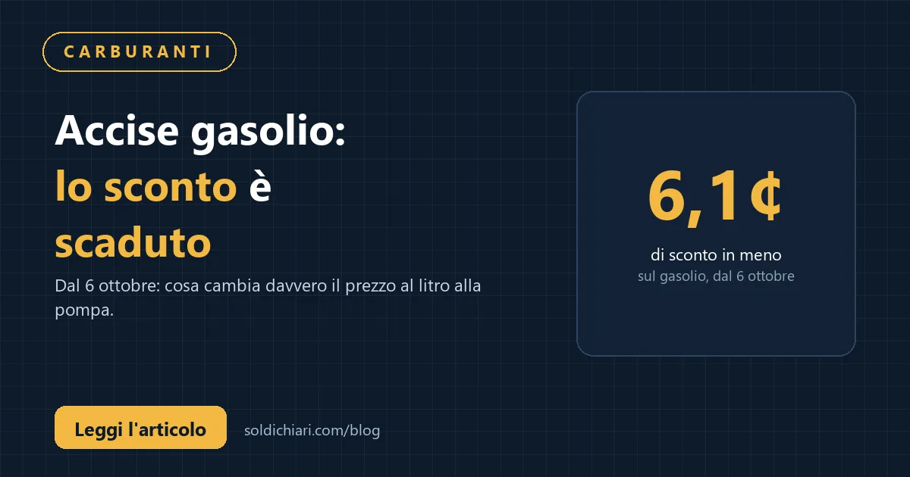

Da martedì 6 ottobre 2026 le accise sul gasolio rincarano di 6,1 centesimi al litro: lo sconto fiscale predeterminato è scaduto alla mezzanotte e il meccanismo delle accise mobili, annunciato dal governo come sostituto automatico, non è scattato. In Gazzetta Ufficiale non compare il decreto interministeriale Mase-Mef necessario per utilizzare l'extragettito IVA e trasformarlo in riduzione dell'accisa. È la prima volta da marzo che non c'è alcun beneficio fiscale sui carburanti.
Cosa è successo esattamente stanotte
Il decreto-legge 17 settembre 2026, n. 162 aveva prorogato lo sconto di 6,1 centesimi al litro sul gasolio fino al 5 ottobre compreso. Da oggi sarebbe dovuto entrare in funzione il meccanismo delle accise mobili (art. 1-bis dello stesso decreto), che lega la riduzione dell'imposta all'extragettito IVA incassato dallo Stato per i rincari del greggio. Tuttavia, come segnala l'ANSA e conferma Sky TG24, il decreto interministeriale del ministero dell'Economia e dell'Ambiente non è stato pubblicato nella Gazzetta Ufficiale di oggi.
Risultato: l'accisa sul gasolio torna al livello "normale" di 672,90 euro per mille litri (da 622,90 €/mille litri del periodo 26/9–5/10), con un aumento di 50 euro per mille litri, pari appunto a 6,1 centesimi al litro inclusa IVA.
Le reazioni: Codacons, Unione Nazionale Consumatori, Eni
Massimiliano Dona, presidente dell'Unione Nazionale Consumatori, definisce "molto grave" l'assenza del decreto in Gazzetta: "È molto grave che nella Gazzetta Ufficiale di oggi non vi sia il decreto interministeriale per la proroga dello sconto fiscale di 6,1 centesimi al litro sul gasolio". Il Codacons ricorda che lo sconto resterà in vigore fino al 5 ottobre e che da oggi gli automobilisti "dovranno dire addio allo sconto delle accise predeterminato".
Sul fronte industriale, Eni ha già adeguato i prezzi consigliati: secondo la rilevazione di Staffetta Quotidiana, il 6 ottobre il cane a sei zampe ha aumentato il prezzo consigliato del gasolio di 6 centesimi al litro, portando il tetto massimo (price cap) da 2,19 €/L a 2,25 €/L. Il price cap sulla benzina resta confermato a 2,15 €/L.
Cosa ha detto il viceministro Leo
Nel pomeriggio del 6 ottobre, interpellato dai cronisti in Transatlantico a Montecitorio, il viceministro all'Economia Maurizio Leo ha dichiarato testualmente: "Ci stiamo ragionando, non c'è una decisione, vediamo, ci stiamo lavorando". Una frase che conferma l'assenza di una decisione politica definita sull'attivazione delle accise mobili, lasciando scoperto il passaggio dallo sconto fisso al meccanismo flessibile.
Impatto concreto per chi fa il pieno
- Pieno da 50 litri: +3,05 euro rispetto a ieri (solo per la fine dello sconto, senza contare eventuali ulteriori rincari alla pompa).
- Annuale (24.000 km): circa 73 euro a 20 km/l, 98 euro a 15 km/l, 122 euro a 12 km/l — ipotizzando che il rincaro d'accisa si riversi per intero sul prezzo finale.
- Price cap Eni: da 2,19 €/L a 2,25 €/L sul gasolio (benzina ferma a 2,15 €/L).
Il contesto: accise mobili, extragettito IVA e decreto mancante
Il meccanismo delle accise mobili era stato introdotto per rendere automatico il collegamento tra prezzo del petrolio e tassazione sui carburanti: quando il greggio sale, lo Stato incassa più IVA e usa quell'extragettito per tagliare l'accisa. Il decreto attuativo interministeriale (Mase + Mef) deve indicare i carburanti interessati, l'ammontare dello sconto e il periodo di applicazione. Senza quel decreto, il meccanismo non parte — e oggi non è partito.
Per la prima volta da marzo 2026 (primo decreto post guerra Usa-Iran) non c'è alcun taglio fiscale attivo sui carburanti. La transizione dallo sconto predeterminato alle accise mobili si è inceppata sul piano formale: manca la pubblicazione in Gazzetta Ufficiale.
Cosa può fare il consumatore adesso
Monitorare i prezzi alla pompa (app Mimit, sito Osservaprezzi) e confrontare self-service vs servito, autostrada vs rete ordinaria. Il price cap Eni a 2,25 €/L funge da riferimento massimo sulla rete del cane a sei zampe, ma altri marchi possono avere prezzi diversi. Pianificare i rifornimenti e, se possibile, anticipare il pieno prima di ulteriori adeguamenti può limitare l'impatto immediato.
Per capire come questa spesa in più incida sul tuo bilancio familiare e sul tuo stipendio netto reale, usa il calcolatore ufficiale:
💶 Calcolatore stipendio netto → scopri il tuo potere d'acquisto reale
Puoi anche verificare se il tuo budget regge con la regola 50/30/20:
🔧 Budget calculator 50/30/20 →
Fonti
- ANSA, Scattano accise sul gasolio più alte, nessun decreto in Gazzetta, 6 ottobre 2026 (ore 08:28): ansa.it
- Sky TG24, Dal 6 ottobre accise sul gasolio più alte, nessun decreto in Gazzetta, 6 ottobre 2026: tg24.sky.it
- Sky TG24, Caro carburanti, non scattano le accise mobili: sul gasolio +6,1 centesimi, 6 ottobre 2026 (ore 14:26): tg24.sky.it
- Corriere della Sera, Gasolio, "salta" il tetto a 2,19 euro al litro perché non è scattato lo sconto sulle accise mobili, 6 ottobre 2026: corriere.it
- La Gazzetta (Motori), Prezzo diesel, niente accisa mobile. Si alza il costo minimo, 5 ottobre 2026: gazzetta.it
- Staffetta Quotidiana, rilevazione prezzi consigliati Eni 6 ottobre 2026: price cap gasolio 2,25 €/L (era 2,19 €/L), benzina 2,15 €/L.
- Dichiarazioni del viceministro Maurizio Leo, 6 ottobre 2026, Transatlantico Montecitorio (cit. ANSA, Sky TG24, Corriere).
- Elaborazioni proprie su calcolo stipendio netto (regole 2026: INPS 9,19%, scaglioni 23/33/43%, addizionali nella media nazionale). Non costituiscono consulenza fiscale.
Disclaimer: Questo articolo ha scopo informativo e non costituisce consulenza fiscale, legale o finanziaria. I dati su prezzi e accise sono tratti da fonti pubbliche (ANSA, Sky TG24, Corriere, Gazzetta Ufficiale, Staffetta Quotidiana) alla data del 6 ottobre 2026. Le norme e i prezzi possono variare. Per decisioni rilevanti consulta un commercialista o un consulente finanziario abilitato.